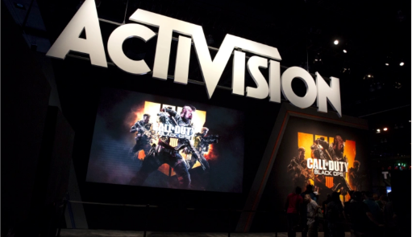

Microsoft to buy Activision Blizzard for $68.7 billion
Amanda Silberling

Register today for DeFi and the Future of Programmable Money Summit
Alexandra AmesTC+
For investors, future of work isn't only about HR
Anna Hiem
Upward plans to open a 250,000-square-foot vertical farm in PA early next year
Brian Heater
Wayve raises $200M Series B led by Eclipse for its AI for autonomous delivery vehicles
Mike ButcherThe Last
Snapchat says it's getting better at finding illicit drug dealers before users do
Taylor Hatmaker11:15 AM PST * January 18, 2022
Snapchat has faced increasing critism in recent years as the opioid crisis plays out on social media, often with tragic results. In October, an NBC investigation reported the stories of an number...
TC+
Will quantum computing remain the domain of the specialist VC?
Maria Lepskaya11:06 AM PST * January 18, 2022
Snapchat has faced increasing critism in recent years as the opioid crisis plays out on social media, often with tragic results. In October, an NBC investigation reported the stories of an number...
Ex-Dispo founding members launch Roll app, where creators post exclusive content
Today marks the launch of the Roll app, which aims to create an easy way for creators to make an extra buck while protraying a potentially more authentic version of themselves to their fans. Alread...